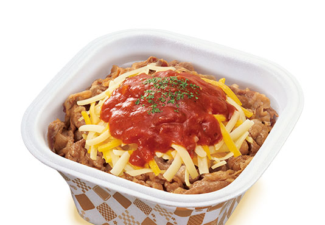
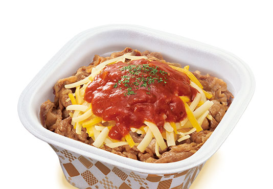
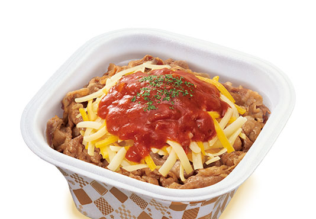

トマトチーズ牛丼
同時に販売する「トマトチーズ牛丼」は、コクのあるトマトソースと濃厚なチーズが調和した洋風な味わいの商品です。トマトソースはトマトの爽やかな酸味に、スパイスをきかせることでコク深い味わいに仕上げました。
マイルドなチーズと絡めてお召し上がりください。
 

同時に販売する「トマトチーズ牛丼」は、コクのあるトマトソースと濃厚なチーズが調和した洋風な味わいの商品です。トマトソースはトマトの爽やかな酸味に、スパイスをきかせることでコク深い味わいに仕上げました。
マイルドなチーズと絡めてお召し上がりください。
